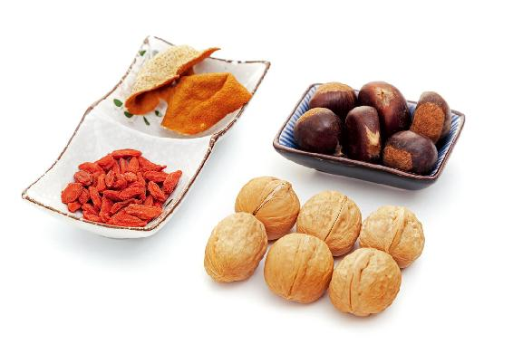
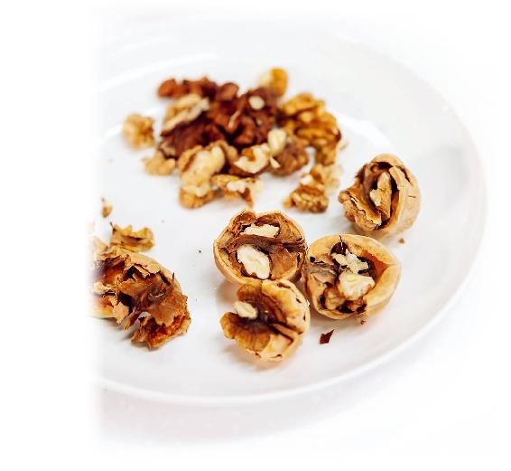
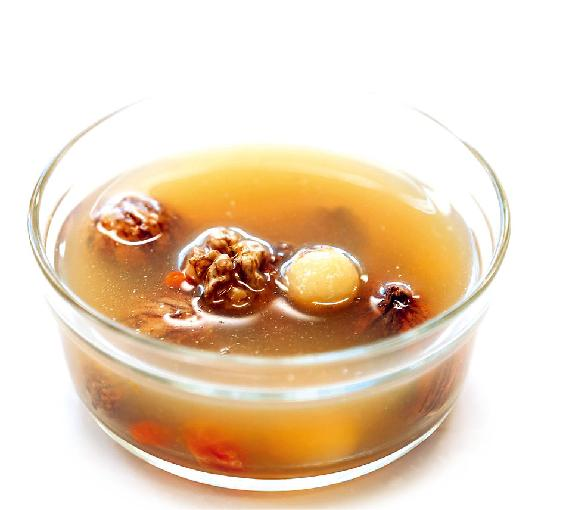
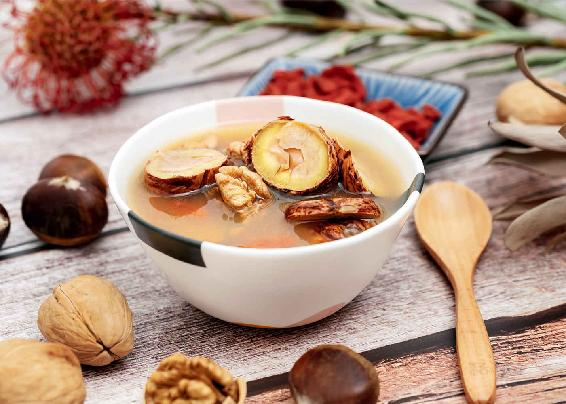

立冬的时候，之前说的补肾阳和补肾阴的汤方和茶饮方，还可以继续吃。因为立冬是一个节气，它管的是三十天，而下旬的小雪节气是一个中气，它管的是十五天。所以从饮食养生的角度来说，凡是月初节气的饮食方子，都是可以适用一个月的。而每个月下旬关于中气的饮食方子，是只适用半个月的。
当然，如果所有这些方子，您喝了后觉得很舒服，而且也适合您的体质，不妨一直喝下去，这是没有问题的。
“小雪而物咸成”，小雪节气，为什么定名叫小雪呢？其实，每年立冬以后，往往会经历一个小阳春，也就是天气会回暖几天，但等到一场冬雪过后，就会马上体会到冬天到了。而小雪节气，就是应该下雪的时候。
现在北方的天气是越来越暖和了，往往是到了小雪不见雪，这是反常的，会对身体产生不好的影响。
秋天开始，天气往上升，地气往下降，人在这时候会感觉到天朗气清，古人叫秋高气爽。这个“高”实际上就是天气往上高升的意思。而到了小雪节气，天地之气就完全分开了，这叫作阴阳不通、天地闭藏。“小雪而物咸成”，大自然已经完成了一年的春生夏长秋收的工作，要进入冬藏了，要休息了。小雪节气就是阴阳不通、天地闭藏的开始。
读者评论：顺天时、地时、人时，就能过好日子
上善若水：大爱陈老师，跟着老师学了很多知识，老师所有的书我几乎都看过，正如老师所说，顺天时、地时、人时，就能顺其自然过好日子。
闭藏不是一个很玄乎的概念，闭，就是关闭；藏，就是藏起来，意思就是关闭大门，把自己藏起来，保存生存的温度。
天地是怎样闭藏的？北方四季比较分明，冬天一到，水面就会结冰，土地就会上冻，这就是天地的闭藏。
水面结冰以后，水面下的温度会保持在零度以上，鱼就能过冬。而地表上冻以后，地表下面就是保温层，农民会在地表上冻之前挖好地窖，把白菜、红薯、土豆等存到地窖，这样就不会被冻坏。
补肾养藏汤

原料：生栗子6个，生核桃6个，枸杞1小把，陈皮1/4～1/2个。

做法：
1.先把栗子剥开，去外面的硬壳，不要去掉内皮，切成两半备用；生核桃去壳，核桃仁的皮要留下；陈皮如果是在药店买的，用几克就可以了，如果是自己晾晒的，可根据陈皮的大小用1/4～1/2个。

2.把这三种原料加上枸杞一起同冷水下锅，水开后再煮20～40分钟起锅。起锅后，栗子的毛茸茸的内皮会与栗子仁分离，我们可以轻轻地用筷子把它捞出来，扔掉就可以了，这个皮不用吃。
允斌叮嘱：
1.补肾养藏汤所用原料的量，是一个人的参考用量。您可以根据家里的人数酌量增加。如果想要汤的味道不那么苦，可以多放一点儿枸杞，少放一点核桃仁、栗子，这样汤不会发苦，而且吃了好消化。有一些脾胃虚弱的人想多补补肾，多放了些核桃仁、栗子，结果吃了以后肚子胀气。
2.因为栗子和核桃仁都带着皮，汤里放多了会有一点苦涩，所以要把握好这个量。关键一点是要把栗子切成两半，不然不容易煮出味来。
3.有些人可能会有疑问，为什么栗子要带着内皮煮呢？因为栗子是一种很补的东西，一旦吃多了，人就会消化不良、腹胀、气滞，没有胃口，带着内皮煮就可以预防这些问题。
其实，人和天地是一样的，在冬天的时候，人要用秋天收获的粮食、果实来帮助身体封藏精气，这样人体的精气才不会泄漏。
人体的精气保存在哪儿呢？保存在我们的肾系统。冬天闭藏，需要先补肾，而且是全面地补肾，对它进行加固。就像在冬天，为了防止屋内的热气泄漏出去，我们会对门窗进行加固、维修一样。同样，补肾就可以防止精气外泄，同时也给我们的身体保暖。
小雪节气，我们可以喝一道补肾养藏汤。这道汤不仅适合小雪节气喝，在整个冬天，您都可以经常喝。
补肾养藏汤是温补的，可以补肾、润肺、健脾，还能滋阴、补气、补阳。
我的一些读者喝了这道汤后，原本怕冷的人一下觉得后腰暖暖的，冬天也不怕冷了。还有一些朋友喝了之后，觉得自己秋、冬季不容易掉头发了。甚至有一些朋友喝了之后，头发的色泽更亮了。
如果汤里的陈皮是从药店买的，煮出来的汤会有一点发苦，给小孩子喝这道汤，您可以往汤里加少量的糖，最好是红糖，因为红糖既有增强补血的作用，又可以补充矿物质。加麦芽糖也是可以的。
喝汤时，可以把栗子、核桃仁和枸杞吃掉。
老年人长期喝补肾养藏汤，会有强筋壮骨的功效。有骨质疏松症的人，建议可以经常喝这道汤，时间上不限于冬天，平时也可以喝。

补肾养藏汤是比较偏于温补的，如果您是一个体质偏弱、特别容易上火的人，可以减少核桃仁的用量而多放一点儿枸杞。有的人觉得放陈皮后汤味特别苦，这可能是陈皮的质量问题。
如果您想用新鲜的红橘皮来代替陈皮也可以，前提是您这几天正好便秘。因为新鲜的橘皮能刺激肠胃，起到通便的作用。如果您这几天正好腹泻，最好不要用新鲜的红橘皮来代替陈皮，因为这会加重腹泻。
补肾养藏汤中，栗子补的是肾气，核桃仁补的是肾阳，枸杞补的是肾阴，加一点儿陈皮，可以健脾理气，帮助消化，防止补得太过。补肾养藏汤很平和，适合全家老少一起来喝。
给孕妇喝也没问题，只是要注意，如果在孕早期（三个月以内），我们要把核桃仁的皮去掉。
北方四季分明，小雪节气应该见到下雪才好。可现在，甚至到了大雪节气，冬天的第一场雪也可能见不到。这种天气特别容易引发传染病，如流感，甚至有些年还引发了禽流感。
在北方的朋友，如果小雪节气没有下雪，您可以在做补肾养藏汤的时候，加五六个干山楂（新鲜的山楂也可以）一起来煮，再加一点儿红糖调味，这样更利于提高身体的抗病能力。
在南方的朋友，如果在小雪节气，气温还没有降至往年的温度，您也可以加山楂一起来煮，从而提高身体的抗病能力。
对于整个冬天来说，小雪节气是一个很特殊、能打好身体基础的阶段，希望大家一定要重视。
读者评论：喝补肾养藏汤，皮肤有了光泽，头发又亮又黑，也不怕冷了
开心果果的麻麻：煮了一锅补肾养藏汤，一家人都喝了，晚上感觉全身热乎乎的，尤其是脚，感觉要冒汗。我妈妈也说喝了不怕冷了。
米朵儿_04：补肾养藏汤喝完后全身暖暖的，身体有明显好转。腰不那么疼了，做家务轻松了很多；牙齿不怕凉了，以前都要用热水刷牙，现在终于不用了。发自内心地感谢陈老师！
一根葱_3s：我喝了一段时间补肾养藏汤，到了经期，就没再喝了。神奇的是这次经期身体没什么异常反应，以前常有的腰酸背痛都没有了，谢谢老师。
快乐吟吟：喝了三次补肾养藏汤后，发现后腰暖暖的，以前有点蛋白尿，现在基本上没有了。
云南云：喝了几天补肾养藏汤，手指上的半月痕多了，精神状态好了。
香蕉奶昔派：我们家每天都喝补肾养藏汤，我感觉身体越来越好，皮肤有了光泽，头发又亮又黑，也不怕冷了，整个人都很精神。